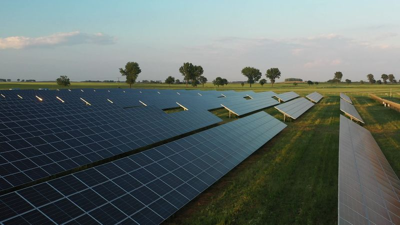

Mission Areas
Where we focus our energy
Four interconnected areas guide our support and grant-making. Hover on each to explore.


To achieve our mission, the SRM Foundation is committed to supporting initiatives across various areas: research and innovation, socially just transition, education and awareness, and advocacy and policy.
In order to promote our vision of a sustainable future, the SRM Foundation supports energy transition projects and initiatives across advocacy, research, education, and social justice.
Support the decarbonisation of existing infrastructure, helping industries reduce their emissions profile as they transition to cleaner operations.
Contribute to carbon offsetting through woodland creation and planting, restoring habitats while capturing atmospheric carbon.
Support higher-education institutions in energy transition research and innovation, building the capacity and skillsets required for a successful transition.
Back initiatives related to Carbon Capture and Storage (CCS) and renewable energy technologies for sector-specific use.
Promote investment in energy transition strategies that consider stakeholder interests, from local communities to industry workforces.
Endorse initiatives from organisations sharing common energy transition goals for more extensive and lasting impact.
Four interconnected areas guide our support and grant-making. Hover on each to explore.

The SRM Foundation adopts a data-driven approach to its work in order to build the operational capacity and relevant in-house expertise required to develop its own selection criteria and measurable success indicators of the projects it supports.
In the medium term, the SRM Foundation will work with partners to design its own projects and initiatives in furtherance of its objectives. Leadership by example is at the core of our belief in a meaningful transition to sustainability.
The SRM Foundation invites organisations interested in joining an initiative or launching a new one to get in touch.
Get in touch